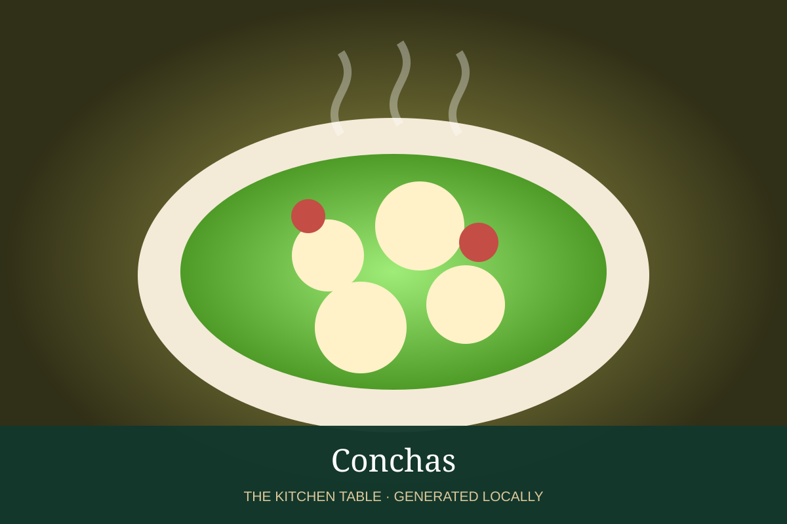

MEXICAN · DESSERTS & DRINKS
Conchas
Classic Mexican pan dulce with a tender enriched bun and crisp shell-pattern topping.

Ingredients
- 4 cups bread flour
- 2 1/4 tsp yeast
- 3/4 cup warm milk
- 1/2 cup sugar
- 2 eggs
- 6 tbsp butter
- 1 tsp vanilla
- Topping: 1/2 cup butter, 1/2 cup sugar, 1 cup flour
Method
- Knead flour, yeast, milk, sugar, eggs, butter, and vanilla until smooth; rise until doubled.
- Divide and shape into buns.
- Mix topping ingredients into a paste, flatten over buns, and score a shell pattern.
- Proof until puffy; bake at 350°F until lightly golden.